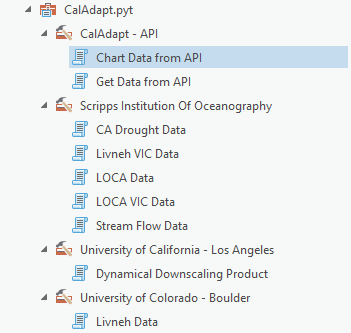

caladapt-py is an API client that makes it easier to work with data from Cal-Adapt.org in Python and ArcGIS. The role of
caladapt-py is to bring data into Python and ArcGIS and provide high-level
functions to get it into your GIS for further analysis:
caladapt-py allows you to:
- download netcdf data from the Cal-Adapt Data Server using HTTPS. These data allow for custom analyzes to be conducted at the statewide scale using GIS.
- retrieve values by user defined points, lines, or polygons
- store results in File Geodatabase tables and other table types
‘Beta’ status means:
- the tool is still under development
- the tool is being updated fairly often
- there’s a possibility that updates will not be backward compatible
Installation
caladapt-py is hosted on GitHub. To install, download the zip file from github and uncompress the zip file into
your project folder. For ArcGIS, load the python toolbox into your ArcGIS Project and use
the tools in the toolbox. For Python, import the libarary and use the different modules as
needed.
General Workflow
ArcGIS Python Toolbox
- Add toolbox to ArcGIS Pro Project 
- Run tool to download resultrs from user defined areas
- Run tools to download netcdf datasets
- Perform additional GIS analyzes based on returned data
Python (Jupyter Notebook)
In general, there are three steps to getting data via the Cal-Adapt API:
- Import the ArcPy module from ArcGIS Pro
import arcpy - Add toolbox to ArcGIS Pro Project
- In jupyter Notebook refence both the CalAdapy.pyt toolbox and the CalAdaptLib.py module
arcpy.ImportToolbox(r'D:\Data\ArcGIS\Projects\CalAdapt_Cookbook\CalAdaptLib\CalAdapt.pyt','')import CalAdaptLib as cal - After importing you can run tools from the ArcGIS Python Toolbox or the CalAdaptLib
ie.
arcpy.GetDataAPI("Get Data from API Input Feature Set (Polygons)", None, '', "tair", "gfdl-cm3", "month", True, True, True, False, "mean", r"D:\Data\ArcGIS\Projects\CalAdaptpy_Test\CalAdaptpy_Test.gdb\GetDataAPI")